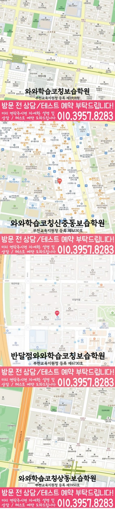

30초 핵심 안내
약대동 영수학원 선택 전 확인할 기준
약대동 영수학원은 약대동에서 영어·수학 상담을 준비할 때 영어 어휘·구문과 수학 개념·적용의 연결을 현재 교재와 오답 기록으로 확인하도록 돕는 정보입니다. 제공 센터 주소는 경기 부천시 원미구 길주로 191 금영프라자 제 4층 401호입니다. 영어·수학 공통 가능 학년과 해당 학교 정보는 자료에 기재되지 않아 수업 개설 여부·대상 학년·시간표를 상담 시점에 확인해야 합니다.
English & Math Learning Guide
약대동 영수학원을 찾는 학부모를 위해 학생의 학년 단계, 영어 독해 근거와 수학 풀이 근거의 기록, 과제와 오답 점검 기준을 안내합니다.
30초 핵심 안내
약대동 영수학원은 약대동에서 영어·수학 상담을 준비할 때 영어 어휘·구문과 수학 개념·적용의 연결을 현재 교재와 오답 기록으로 확인하도록 돕는 정보입니다. 제공 센터 주소는 경기 부천시 원미구 길주로 191 금영프라자 제 4층 401호입니다. 영어·수학 공통 가능 학년과 해당 학교 정보는 자료에 기재되지 않아 수업 개설 여부·대상 학년·시간표를 상담 시점에 확인해야 합니다.
수업 안내 이미지

센터 위치 안내

약대동 영수학원 선택에서는 이전 단원 빈틈과 보호자 확인 의존을 같은 원인으로 단정하지 않고 과목별 학습 문제와 생활 습관으로 나누는 진단이 우선입니다. 상담에서 살펴볼 학생은 이전 학년 핵심 단원의 빈틈을 남긴 채 선행 진도를 빠르게 이어 가는 학생이며, 부모가 확인할 때만 오답노트를 펼쳐 보는 편입니다. 대표 어려움이 수학 수행에서 먼저 나타나므로 수학 단원 누적을 핵심 항목으로 확인하고, 영어 복습 간격은 실제 수행 자료에서 필요가 확인될 때만 보완 항목으로 두고, 이전 단원 빈틈 보완 기준과 보호자 확인 의존 조정 기준은 서로 다른 자료에서 확인합니다. 따라서 이곳에서 학습플래너관리를 확인할 때는 학교·이동·휴식을 뺀 실제 학습 가능 시간과 과목별 블록을, 과제의 우선순위·예상 시간·완료 기준을, 미완료 원인을 표시하고 남은 과제를 옮기거나 줄이는 주간 수정 방법을 나누어 점검해야 합니다. 상담에서는 학부모가 영어와 수학의 과제 이행, 질문 회수, 오답 재현을 직접 대조할 기준을 점검할 수 있고, 학생의 출발점은 이전 단원 빈틈 기록과 보호자 확인 의존 기록을 나누어 설명합니다.
경기 부천시 약대동에서 영수학원을 알아볼 때에는 제공 주소인 경기 부천시 원미구 길주로 191 금영프라자 제 4층 401호와 실제 이동 경로를 먼저 확인합니다. 영어·수학 공통 가능 학년은 자료에 기재되지 않아 수업 개설 여부와 대상을 상담에서 확인해야 합니다.
제공 자료에 약대동 학교 목록이 없어 학교명을 임의로 만들지 않았습니다. 상담 시 현재 학교의 시험 범위와 교재를 직접 확인해 학습 계획에 반영합니다.
제공된 센터명은 와와학습코칭센터 중동점, 등록 정보는 부천교육지원청 등록 제5918호입니다. 이 정보만으로 수업 가능 여부를 단정하지 않으며, 영어·수학 대상 학년·개설 과목·시간표·교습비 적용 조건을 상담 시점에 다시 확인해야 합니다.
학생이 이전 학년 핵심 단원의 빈틈을 남긴 채 선행 진도를 빠르게 이어 가는 데다 부모가 확인할 때만 오답노트를 펼쳐 보는 편이라면, 상담의 출발점은 진도보다 오류가 생긴 순간을 찾는 일입니다. 이전 단원 빈틈 보완과 보호자 확인 의존 조정을 함께 살필 때, 이 지역의 특정 학교 성향을 추정하기보다 학생이 설명을 멈추는 순간, 답을 고친 흔적, 다시 푼 날짜를 살펴보면 우선순위가 더 선명해집니다.
약대동 센터 자료에는 학교 참고 목록이 없어, 현재 교재와 학교 과제를 직접 확인해 계획에 반영합니다. 약대동 학부모는 과거 사례만 보고 이번 시험의 난도나 문항 유형을 단정하지 않습니다. 확인할 학원 주소 정보는 '경기 부천시 원미구 길주로 191 금영프라자 제 4층 401호'입니다. 약대동에서는 주소만으로 교통편이나 소요 시간을 추정하지 않고 가정별 출발 조건을 적용해야 합니다. 학생의 내신 준비는 확정된 범위와 남은 수업 횟수, 영어 암기량, 수학 재풀이량을 한 일정에 놓을 때 실행 여부를 살피기 쉽고, 약대동 학생의 범위는 받은 공식 자료로 다시 확인합니다.
우선, 상담에서는 학교·이동·휴식을 뺀 실제 학습 가능 시간과 과목별 블록을 학습플래너관리의 확인 항목으로 물어봅니다. 두 번째로, 과제의 우선순위·예상 시간·완료 기준을 중심으로 학습플래너관리 설명이 학생의 계획과 연결되는지 묻고, 다음 점검 때 무엇으로 확인할지 상담 메모에 남길 만큼 답변을 구체화합니다. 마지막으로, 학생에게 맞는지 판단하려면 미완료 원인을 표시하고 남은 과제를 옮기거나 줄이는 주간 수정 방법을 구체적으로 물어 가용 시간·우선 과제·수정 규칙의 적용 범위와 미확인 항목을 구분합니다. 이 확인 과정을 거치면 학습플래너관리의 가용 시간·우선 과제·수정 규칙 가운데 확인된 내용과 학생에게 아직 적용할 수 없는 내용을 구분할 수 있습니다.
약대동에서는 영어 과제마다 암기·적용·근거 확인 중 어떤 완료 기준을 쓰는지 질문해 보세요. 결국 영어 학습관리는 학생의 읽기 과정과 쓰기 흔적에 연결될 때 판단 기준이 되며, 영어 복습 간격 점검 결과와 보호자 확인 의존 조정 기록은 따로 남깁니다.
상담에서 진도표만 확인하면 개념을 들은 상태와 혼자 풀 수 있는 상태를 구별하기 어려우므로 도움 없이 다시 푼 결과가 필요하며, 수학 단원 누적 점검 결과와 보호자 확인 의존 조정 기록은 따로 남깁니다. 학생의 수학은 예제 이해, 유사 문제, 조건이 바뀐 문제, 시간 제한 문제로 단계를 나누면 학생의 막힌 지점을 과장 없이 설명할 수 있습니다.
가정의 역할은 영어와 수학을 다시 가르치는 것이 아니라 학생이 세운 계획과 실제 기록 사이의 차이를 짧게 확인하는 데 있고, 가정에서는 이전 단원 빈틈 보완 기록과 보호자 확인 의존 실행 여부를 서로 다른 질문으로 확인합니다. 이 구분이 지켜져야 수업 기록이 가정의 감시 도구가 아니라 학생의 자립을 돕는 정보로 쓰이며, 보호자가 볼 항목은 이전 단원 빈틈 결과와 보호자 확인 의존 조정 과정으로 나누어야 합니다.
진행 중간에는 학생이 혼자 설명할 수 있는 범위와 여전히 도움을 받는 범위를 나누고, 원래 계획이 과했다면 분량보다 우선순위를 조정합니다. 학습플래너관리의 가용 시간·우선 과제·수정 규칙을 다시 볼 때는 학교·이동·휴식을 뺀 실제 학습 가능 시간과 과목별 블록을 최신 안내와 대조하고, 미완료 원인을 표시하고 남은 과제를 옮기거나 줄이는 주간 수정 방법을 학생의 기록에서 재확인해야 합니다. 마지막에는 넓은 장점 표현보다 학생이 유지할 행동 하나와 다음에 바꿀 행동 하나가 남는지 확인해 보되, 다음 계획에는 이전 단원 빈틈 보완 일정과 보호자 확인 의존 조정 시점을 따로 표시합니다.
Information Basis
센터명·주소·등록번호·학교 참고 목록은 제공 자료 범위에서 확인했습니다. 실제 수업 가능 학년과 과목, 시간표는 상담 시점에 다시 확인해야 합니다.
FAQ
준비물은 학생의 최근 영어·수학 결과물과 과제 이행 기록이며, 준비한 자료에서 이전 단원 빈틈 보완 단서와 보호자 확인 의존 조정 단서를 구분합니다. 특히 학생이 어려움을 겪은 순간이 표시된 자료가 있으면 점수보다 실제 학습 행동을 중심으로 질문할 수 있고, 상담 기록에는 이전 단원 빈틈 결과와 보호자 확인 의존 실행 시점을 따로 남깁니다.
두 과목을 같은 문제 수로 맞추기보다 학생이 영어 복습 간격과 수학 단원 누적을 스스로 설명할 수 있을 때까지 필요한 단위를 정해야 하며, 영어·수학 분량과 보호자 확인 의존 조정 기준은 각각 다른 칸에 기록합니다. 이전 단원 빈틈 보완 분량과 보호자 확인 의존 조정 기준도 상담에서 확인하세요.
약대동 상담에서는 학교 정보를 추정하지 않고, 학생이 가져온 현재 교재와 평가 안내를 기준으로 학습 계획을 조정합니다. 약대동 학부모는 이 자료에 다른 학교의 출제 방식이라고 추정한 내용을 섞지 않습니다. 약대동 학부모는 지역 표기만으로 출제 경향이나 학사 일정을 추정하지 않습니다.
학습플래너관리 관련 상담에서 학교·이동·휴식을 뺀 실제 학습 가능 시간과 과목별 블록을, 과제의 우선순위·예상 시간·완료 기준을, 미완료 원인을 표시하고 남은 과제를 옮기거나 줄이는 주간 수정 방법을 각각 물어보세요. 제공 여부를 미리 단정하지 말고 예정과 실제 시작·완료 기록을 비교해 다음 계획이 현실적으로 조정되는지도 실제 안내와 학생의 기록에서 다시 확인해야 합니다.
Parent Perspective
※ 약대동 학부모가 상담에서 확인할 상황을 재구성한 예시이며, 실제 수강 후기나 특정 성적 결과가 아닙니다.
저희는 자녀의 이전 단원 빈틈과 보호자 확인 의존을 하나의 성격 문제로 단정하지 않고 기록으로 나누어 보려고 합니다. 영어는 복습 간격을, 수학은 단원 누적을 먼저 점검하고 실제로 더 막힌 과목에 시간을 배분하겠으며, 이전 단원 빈틈 보완과 보호자 확인 의존 조정은 저희 가정이 서로 다른 항목으로 기록하겠습니다. 학습플래너관리의 가용 시간·우선 과제·수정 규칙을 살펴본 뒤에도 과제 이행과 자기 설명이 남는지를 중심으로 판단하겠습니다.